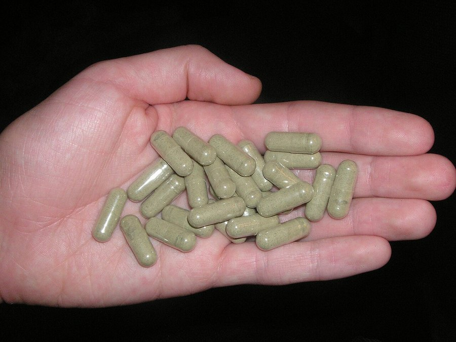

Elderberry and Cognitive Function: Is There Any Brain Benefit?
Elderberry has a loud reputation as a cold-and-flu remedy. Its reputation as a brain supplement is much quieter, and for a simple reason: the research mostly isn't there yet.

Key takeaways
- No human trial has directly tested elderberry for memory or cognition. Nearly all elderberry research looks at colds, flu and immune markers.
- Elderberries are rich in anthocyanins, the same antioxidant family found in blueberries, which have some brain-related research behind them in other berries.
- Any cognitive benefit today is inferred, not proven — borrowed from related compounds and other berries, not from elderberry studies themselves.
- Raw elderberries, leaves and stems are toxic and must be cooked or professionally processed before use.
- If brain fog during a cold is the real concern, elderberry's possible effect on shortening illness may help indirectly.
There's no direct evidence that elderberry improves cognitive function. Nearly all elderberry research studies colds, flu symptoms and immune markers, not memory or thinking. Its antioxidant content (anthocyanins) is plausible for general brain health by analogy with other dark berries, but that's an inference, not a finding specific to elderberry.
If you came here because an elderberry gummy bottle mentions "brain health" on the label, here's what the actual science supports and where the marketing gets ahead of it.
What is elderberry, and why would anyone connect it to the brain?
Elderberry comes from the Sambucus nigra plant, most often sold as a dark purple syrup, gummy or capsule made from the cooked, ripe berries. It's best known in supplement aisles for cold and flu support, where a handful of small clinical trials suggest it may modestly shorten the length of upper respiratory symptoms. The brain connection comes entirely from its anthocyanin content, deeply pigmented antioxidant compounds also found in blueberries, blackberries and purple grapes, some of which have their own separate research tying them to blood flow and oxidative stress in the brain.
Elderberry syrup has a long folk-medicine history going back centuries, well before anyone studied anthocyanins in a lab. Modern interest picked up sharply during cold and flu seasons over the past two decades, as small trials on immune markers gave the old home remedy a more scientific-sounding backing. Supplement brands noticed the same deep purple pigment that other berries use for brain-health marketing, and some started applying similar language to elderberry products, even though the underlying research hadn't caught up yet.
What does the research actually say about elderberry and cognitive function?
As of now, essentially nothing specific. A search of the clinical literature turns up studies on elderberry and immune markers, antioxidant capacity in blood, and cold or flu duration, but no randomized trial testing elderberry supplementation against memory, attention or any other cognitive outcome. That's a meaningfully different situation from an ingredient like bacopa monnieri or citicoline, which have dozens of trials measuring cognition directly. Elderberry simply hasn't been studied that way yet.
Do elderberry's antioxidants matter for the brain at all?
Possibly, through the same general mechanism credited to other antioxidant-rich berries: neutralizing oxidative stress, which is believed to contribute to age-related cognitive decline. Research on blueberries and cocoa flavonoids has found associations with improved blood flow to the brain and, in some smaller trials, modest cognitive benefits in older adults. Elderberry's anthocyanin profile is broadly similar, which is the entire basis for assuming it might behave the same way. No study has confirmed that assumption holds for elderberry specifically.
How does elderberry compare with proven memory ingredients?
Not favorably, in terms of direct evidence. Ingredients like citicoline and bacopa monnieri have been tested in human trials specifically measuring recall, attention and processing speed, with real, if modest, effect sizes reported. Elderberry has none of that track record for cognition. It sits in a different category: a reasonably well-studied immune-support ingredient that may offer antioxidant benefits elsewhere in the body, borrowed, not earned, when it comes to brain claims.
| Form | Typical dose | Notes |
|---|---|---|
| Syrup | 10–15 mL, 1–4 times daily | Most-studied form for cold/flu use |
| Gummies | Varies widely by brand | Check extract mg per serving, not just gummy count |
| Capsules | 300–600 mg extract, 1–2 times daily | More standardized dosing than gummies |
| Lozenges | Varies by brand | Marketed for throat and immune support |
COMPLEX
The memory formula we rate highest in 2026
If you want an ingredient panel actually studied for cognition, not borrowed from berry research, one formula combines citicoline, bacopa, phosphatidylserine and B-vitamins with a 60-day guarantee.
See Today's Price →Are there side effects or risks with elderberry?
Properly cooked, commercial elderberry products are generally well tolerated, with occasional mild stomach upset reported at higher doses. The real risk sits with raw or unprocessed elderberry. Uncooked berries, and especially the plant's leaves, stems, bark and seeds, contain compounds that break down into cyanide-related substances and can cause nausea, vomiting and diarrhea. This is specific to raw plant material, not to syrups, gummies or extracts made correctly, but it's a real reason never to forage and eat elderberries without knowing exactly how to prepare them.
Who should skip elderberry supplements?
People on immunosuppressant medication, since elderberry may stimulate immune activity in ways that could counteract certain drugs. People with autoimmune conditions should also check with a doctor first, for the same reason. Anyone with diabetes should watch for elderberry's modest reported effect on blood sugar, and pregnant or breastfeeding people should talk to a doctor before starting any new supplement, elderberry included, given the lack of safety data in that group.
Anyone hoping elderberry will substitute for an actual memory evaluation should also pause. If forgetfulness, confusion or word-finding trouble is new, persistent or getting worse, that's a reason to talk to a doctor, not a reason to add an immune-support berry to the routine. Elderberry's safety profile is reassuring for its intended use; it isn't a screening tool or a treatment for a real cognitive concern.
Is elderberry worth taking if brain fog is your main concern?
Probably not as a direct fix. If your brain fog is tied to being sick, and elderberry genuinely shortens that illness even modestly, clearer thinking could follow as a side effect of feeling better faster, not because elderberry did anything to your brain directly. For brain fog that isn't tied to an active cold or flu, our guide to the best vitamins and nutrients for brain fog covers ingredients with actual cognitive research behind them, which is a more direct path than elderberry.
How does elderberry compare with other berries people take for brain health?
It lags behind, mostly because fewer researchers have looked at it this way. Cranberries have at least a small amount of direct cognitive research in older adults, including trials measuring memory performance. Blueberries have considerably more. Elderberry's research effort has gone almost entirely toward the immune system instead, which isn't a knock against the berry, just a reflection of where the scientific attention has actually landed so far.
So should you take elderberry for your brain?
Take it, if you want to, for what it's actually shown to do: possibly easing cold and flu symptoms a bit faster. Don't take it expecting a cognitive effect, because that claim is currently marketing, not data. If a genuine brain benefit matters to you, ingredients with their own direct human cognitive trials, like citicoline, bacopa or well-studied blueberry extracts, are the more evidence-backed place to put your money and attention. See our full guide to improving memory for the habits and nutrients with the strongest track record.
Frequently asked questions
Does elderberry improve memory?
There's no direct human evidence that elderberry improves memory. Its anthocyanin antioxidants are plausible for general brain health, following patterns seen with other dark berries, but no trial has tested elderberry specifically against memory or recall.
Is elderberry safe to take every day?
Properly prepared, cooked elderberry products like syrups and gummies are generally considered safe for most healthy adults at labeled doses. Raw, uncooked elderberries and the plant's leaves, stems and seeds contain compounds that can cause nausea and should be avoided.
Can elderberry help with brain fog from a cold?
Indirectly, maybe. If elderberry modestly shortens a cold or flu, as some studies suggest, the brain fog that often comes with being sick could clear faster too. That's different from elderberry having a direct cognitive effect.
How much elderberry extract is typically used in studies?
Cold and flu studies have generally used standardized elderberry extract in the range of 300 to 1,200 mg a day, often split into multiple doses. There's no equivalent established dose for cognitive effects, since that research doesn't exist yet.
Does elderberry interact with any medications?
It may interact with immune-suppressing drugs and diabetes medication, since elderberry can stimulate immune activity and may modestly affect blood sugar. Check with a doctor or pharmacist before combining it with either.
Are elderberry gummies as effective as syrup?
It depends on the dose per serving, which varies a lot between brands. Gummies are convenient but often contain less standardized extract than syrup, and some add meaningful sugar. Check the label for the actual elderberry extract amount, not just serving size.
Is elderberry the same as elderflower?
No. Elderflower comes from the same plant's blossoms and is used differently, often for mild diuretic or anti-inflammatory purposes. Most of the immune-support research is specific to the ripe, cooked berry, not the flower.
Want an ingredient panel actually studied for memory?
Elderberry's brain case is borrowed from other berries. See the memory formulas our editors rate highest for 2026, built on ingredients with their own direct human cognitive research.
See the Top 5 Memory Formulas →Related: Cranberries and cognitive function · Citicoline for memory · Bacopa monnieri benefits · Best vitamins for brain fog · How to improve your memory